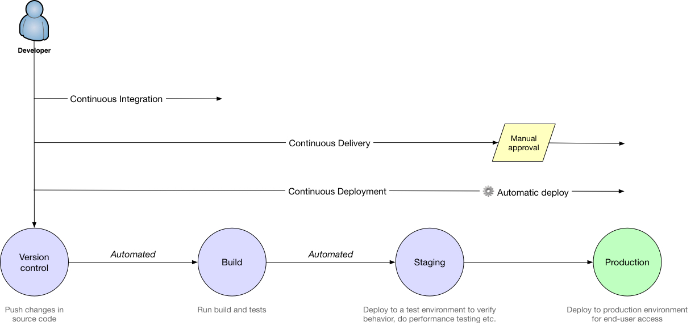
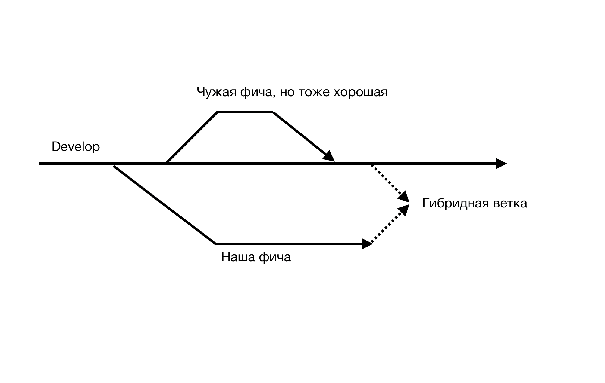
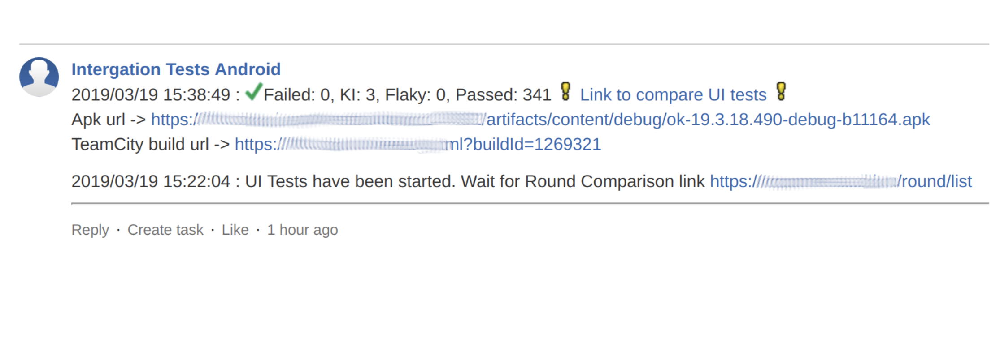
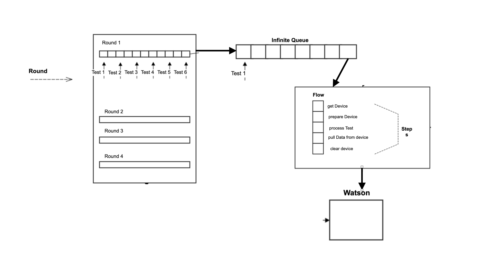

Android курс в Технополисе 2019
Все что было описано выше - это хорошо и легко, когда работает один человек и у него много свободного времени. Т.е. он может собрать проект и запустить тесты, посмотреть результаты. Т.к. он работает один, то скорее всего ему будет легко найти ошибки и поправвить. Но все меняется когда команда разработки начинает расти и фичи надо выпускать раз в неделю. Рассмотрим то как ведется процесс разработки у нас.
CI/CD
Под термином обычно понимают автоматическую сборку и прогон тестов после слияния веток. Рассмотрим, что происходит с момента создания твски до готового приложения. 
- Разработчику прилетает таска в Jire (там конечно описания по-больше будет).

- Он отводит ветку под эту задачу и начинает ее делать.
Он работает в своей ветке и по готовности делает пулл-реквест.

- Пул-реквест смотрят другие разработчики и пишут замечания.

- Также на пулл-реквест запускаются Unit и UI тесты, но не совсем обычно.
Мы не запускаем тесты на чистой бранче, так как там могут быть изменения, которые могут сломать нам девелоп.

- Мы подмердживаем
developсебе в ветку и гоняем на таком гибриде. Это делается для того чтобы девелоп был всегда зеленый.  - Если падают Unit’ы, значит, что при мердже в
developразработчик бы сломал его. Тогда мы запрещаем ему мерджить в стеше.
- Для UI-тестов мы присылаем отчет о сравнении двух раундов. Того, который подмержили (develop) и для ветки с подмердженным develop’ом. 
- UI тесты иногда падают не из-за ошибок, а из-за других проблем, поэтому разработчик может перейти в отчет и проверить.


- Если у нет замечаний и тесты все прошли, то разработчик может вмерджить всой пул-реквест.
- Дальше в определенный день (code freeze) ветка
developотводится вstableи тестировщики провяют новые фичи, на которые пока не написаны автоматизированные тесты. Вносятся исправления вstable. - В пятницу собирается релизная версия приложения. А в воскресенье начинается раскатка на 5%.
- С новой недели анализируются крэши и раскатка продолжается.
Ферма UI тестов
